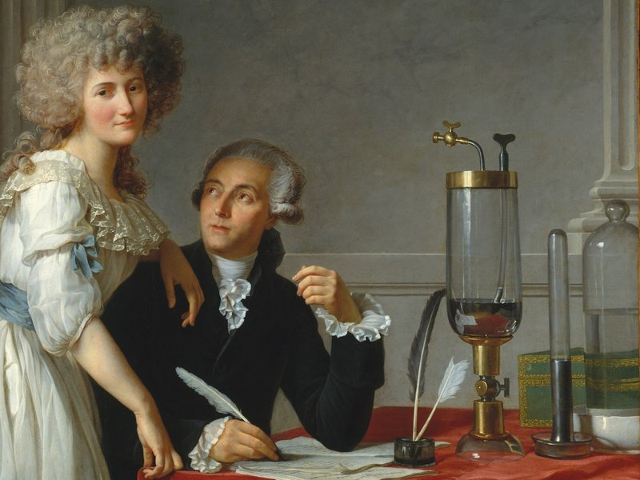
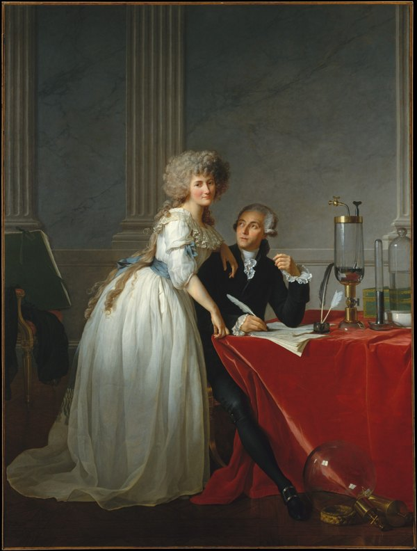
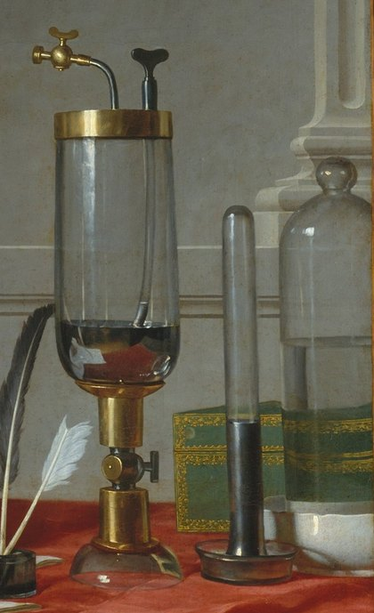

Kilograms and Grams
MA.3.M.1.2 Solve real-world problems involving any of the four operations with whole-number lengths, masses, weights, temperatures or liquid volumes.
Today: read a dial scale by finding what each mark is worth, see 1,000 grams make 1 kilogram, write weights in kilograms and grams, and compare weights on a balance. Dimensions Math 3B, Chapter 11, Lesson 6 · Kilograms and Grams

Paris, France · about 230 years ago

How many grams make a kilogram?
Read the marks on a scale, or level a balance. 1,000 grams make 1 kilogram.
You will…
- Read a scale: find what each mark is worth, then count.
- Change kilograms and grams: 1 kg = 1,000 g.
- Compare weights on a balance and in grams.
Why Lavoisier?
This real painting was made in Paris in 1788 by the artist Jacques-Louis David. It shows the chemist Antoine Lavoisier and Marie-Anne Lavoisier, who worked with him. She drew his science tools and helped with his notes. On the table are the glass and brass tools he used to measure gases and water.


In the 1790s, France made new measures that would be the same everywhere. Lavoisier was known for weighing things very carefully, and he was one of the scientists who planned the new weights. They tied the weights to water. A gram is the weight of water that fills a tiny cube, 1 centimeter on each side. A thousand of those cubes of water weigh 1 kilogram.
Today's math: 1 kilogram is 1,000 grams. A scale has marks, so you can read how many grams something weighs.
Today you'll count by thousands and add up gram weights. Type each answer, then check. You can fix any answer and check again.
Liters into milliliters
Think: The Jar of Water
🔨 Do · ✏️ WriteLavoisier's helpers fill a big jar with water. How heavy is it?
A scale with a round dial. The numbers on the dial are kilograms. The jar waits in the tray below. When it is on the platform, the red pointer turns.
Weigh the jar
Drag the jar onto the scale.
What is each mark worth?
Read the dial
Tell how
1 kg 900 g of water. The pointer passed 1 kilogram and went 9 more marks of 100 g.
1,000 grams make 1 kilogram
- Find what each mark is worth. Count the small marks from 0 to 1 kg. If there are 10, each mark is 1,000 g ÷ 10 = 100 g.
- Read the pointer. Start at the last number it passed and count on by the marks.
- Make a kilogram. 300 g + 500 g + 200 g = 1,000 g = 1 kg.
- Kilograms and grams. The pointer passes 1 kg and goes 7 more marks: 1,700 g = 1 kg 700 g.
- Back to grams. 1 kg 700 g = 1,000 g + 700 g = 1,700 g.
- Watch the zeros. 7 kg 60 g = 7,000 g + 60 g = 7,060 g. Not 760, and not 7,600.
Key idea: kilometers and meters, liters and milliliters, kilograms and grams: each big unit is made of 1,000 small units. To compare two weights, write both in grams first. The mass of a thing is how heavy it is.
Four ways to weigh and compare
Your Turn: Build It on the Scale
🔨 DoPut a 1 kg weight, a 500 g weight, a 100 g weight and a 50 g weight on the scale. How heavy is that in all?
A scale with a round dial and a tray of weights. The gold weight is 1 kilogram. Tap a weight on the scale to take it off.
Put the weights on
Drag the 1 kg, 500 g, 100 g and 50 g weights onto the scale.
How heavy in all?
Kai Loses a Zero
🔨 Do · ✏️ WriteA sack of rice weighs 8 kg 20 g. Kai writes, "That's 820 g."
An empty weight mat and a tray of weights. The gold weights are 1 kilogram each. Tap a weight on the mat to take it off.
Build 8 kg 20 g
Drag 8 gold 1 kg weights and a 20 g weight onto the mat.
Change it to grams
Help Kai
Leo Uses 100
🔨 Do · ✏️ WriteA pumpkin weighs 6 kg 300 g. Leo says, "That's 600 + 300 = 900 g."
An empty weight mat and a tray of weights. The gold weights are 1 kilogram each.
Build 6 kg 300 g
Drag 6 gold 1 kg weights onto the mat, then gram weights that make 300 g.
Change it to grams
Help Leo
Juno Picks the Bigger Number
🔨 Do · ✏️ WriteBag A weighs 1,700 g. Bag B weighs 1 kg 850 g. Juno says, "Bag A is heavier, because 1,700 is a bigger number than 1."
A balance with two pans, and the two bags in the tray. The heavier side of a balance goes down.
Bag A on the left
Drag Bag A onto the left pan.
Bag B on the right
Drag Bag B onto the right pan. Watch which side goes down.
Both in grams
Help Juno
On Your Own: A New Scale
🔨 Do · ✏️ WriteThis scale has more marks than the first one. Weigh the bag of beans. Then change a big weight into grams.
A scale with a round dial and a bag of beans in the tray. Look closely: this dial has more small marks between 0 and 1 kg.
Weigh the beans
Drag the bag of beans onto the scale.
What is each mark worth?
Read the dial
A big weight in grams
Tell how you know
Balance the Box
🔨 DoA box sits on the left pan. How heavy is it? Then, how many more grams would make it weigh 1 kilogram?
A balance with a box on the left pan and a tray of gram weights. When both sides weigh the same, the beam is level and the arrow turns green. Tap a weight on the pan to take it off.
Problem 1 · Level the pans
Drag weights onto the right pan until the two pans are level.
Problem 1 · How heavy is the box?
Problem 2 · Up to 1 kilogram
Prove It
✏️ WriteProblem 3 · Prove It
Just a Few Grams More
A bucket of sand weighs 6 kg 7 g. How many grams is that?
Turn in your work
- Check the list below. Jobs 1 to 8 are required. The Bonus is optional.
- Press 📋 Gather my answers, then 📋 Copy. Or press 🖨️ Print or save as PDF.
- Open this lesson's assignment in Canvas.
- Paste your answers (or upload your PDF and journal photo), then press Submit.
All my answers
Your answers and your work on this page save on this device as you go.
Before you turn in
- I finished Jobs 1 to 8.
- I found what each mark on a scale is worth before I counted.
- I wrote weights in kilograms and grams, and in grams.
- I wrote both weights in grams before I compared them.
- I tried the Bonus. (optional)
Lesson 3.11.07 · Word Problems
Next time, you'll use meters, liters, kilograms and degrees to solve story problems.
A Little Night Music
The Romance, the slow part of "Eine kleine Nachtmusik" by Wolfgang Amadeus Mozart, written in Vienna in 1787. Four kinds of string players share one gentle tune.
Serenade No. 13 in G major, K. 525, "Eine kleine Nachtmusik," Romanze, Wolfgang Amadeus Mozart (1787). Musopen. Public domain, via Wikimedia Commons.